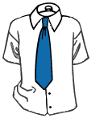

Dressing for the interview
A first impression is made in the first 27 seconds. If you are too formal in your appearance, you might give the impression of being rigid and stuffy. If you are too casual, you may send the signal that you do not take the interview or the job very seriously
The following ideas can never be neglected:
- Look clean and neat. Make sure that your hair is done appropriately. Women - do not wear wild hairdo's Men - get a trim of head and facial hair.
- Do not wear a perfume or cologne as many people are allergic. Bathing with a good quality bath soap will leave a light scent. You will be nervous and a gentle scent can mask the perspiring you may be doing. An unscented antiperspirant can be used.
- Cover any tattoos and avoid gaudy jewelry. Definitely limit pierced jewelry to ears only. Do not wear nose or tongue jewelry
MEN
- Wear a suit or sport jacket with color coordinated trousers
- The color should be neutral or dark - blue, black or gray is best
- Wear a tie - even if you will never wear one after you get the job
- Shoes should be leather - clean and polished - black is best
- Make sure your nails are trimmed and that they are clean.
WOMEN
- Wear a classic suit or a simple dress with a jacket. This is not a time to be provocative or sexy. Some appropriate colors are navy blue, black, dark green, dark red, burgundy, or gray.
- Dress in a higher style that the position calls for but do not attempt to out dress everyone there.
- Avoid wearing clothes that are tight, revealing or trendy. It may be the very latest fashion but it will not impress the interviewer
- Fingernails should be trimmed to a length that doesn't leave an observer wondering how you keep from stabbing yourself. The polish should be closer to a color your mom might wear that to a color that your kid sister would go for.
How to tie a tie
There are four types of knots in tying a tie. they are
1. Windsor knot
2. Half Windsor knot
3. Four in Hand knot
4. Pratt knot
1. Windsor knot
To tie the Windsor knot, select a tie of your choice and stand in front of a mirror. Then simply follow the steps below:
|
1) The wide end "W" should extend about 12 inches below the narrow end "N". Cross the wide end "W" over the narrow end "N". |
|
2) Bring the wide end "W" up through the loop between the collar and your tie; then back down. |

|
3) Pull the wide end "W" underneath the narrow end "N" and to the right, back through the loop and to the right again so that the wide end "W" is inside out. |
|
4) Bring the wide end "W" across the front from right to left. |
|
5) Pull the wide end "W" up through the loop again. |
|
6) Bring the wide end "W" down through the knot in front. |
|
7) Using both hands, tighten the knot carefully and draw it up to the collar. |
2. Half Windsor knot
To tie the Half Windsor Knot, select a tie of your choice and stand in front of a mirror. Then simply follow the steps below:

|
1) The wide end "W" should extend about 12 inches below the narrow end "N". Cross the wide end "W" over the narrow end "N". |
|
2) Bring the wide end "W" around and behind the narrow end "N". |
|
3) Bring the wide end "W" up. |
|
4) Pull the wide end "W" through the loop. |

|
5) Bring the wide end "W" around front, over the narrow end "N" from right to left. |
|
6) Again, bring the wide end "W" up and through the loop. |
|
7) Bring the wide end "W" down through the knot in front. |
|
8) Using both hands, tighten the knot carefully and draw it up to the collar. |
3. Four in Hand knot
To tie the Four in Hand Knot, select a tie of your choice and stand in front of a mirror. Then simply follow the steps below:
|
1) The wide end "W" should extend about 12 inches below the narrow end "N". Cross the wide end "W" over the narrow end "N". |
|
2) Turn the wide end "W" back underneath the narrow end "N". |
|
3) Continue by bringing the wide end "W" back over in front of the narrow end "N" again. |
|
4) Pull the wide end "W" up and through the loop around your neck. |
|
5) Hold the front of the knot loosely with your index finger and bring the wide end "W" down through the front knot. |
|
6) Remove your finger and tighten the knot carefully to the collar by holding the narrow end "N" and sliding the knot up. |
4. Pratt knot
To tie the Pratt Knot, select a tie of your choice and stand in front of a mirror. Then simply follow the steps below:
|
1) Start with the tie inside out, the wide end "W" under the narrow end "N". |
|
2) Take the wide end "W" over and under the narrow end "N". |
|
3) Pull the loop down and tighten. |
|
4) Take the wide end "W" over to the right. |
|
5) Pull the wide end "W" up, behind the loop. |
 |
6) Bring the wide end "W" through the knot and tighten gently.
| |